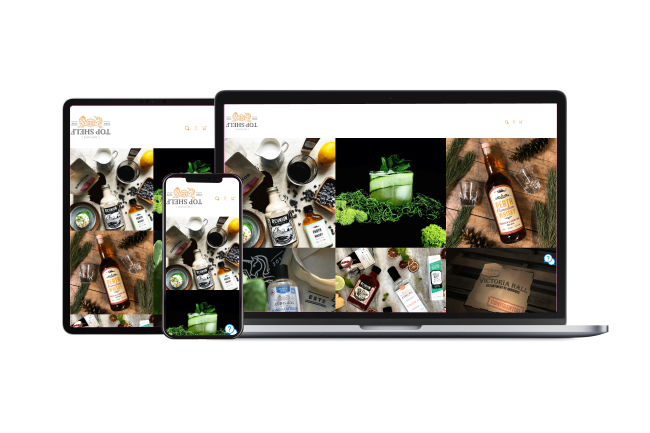
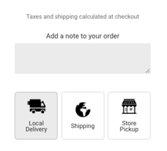
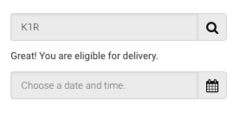
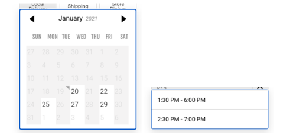
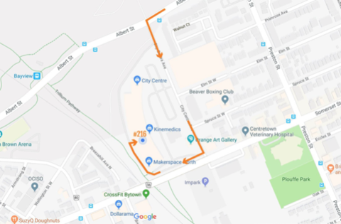

GETTING YOUR ORDER
PLEASE NOTE
All shipping orders are currently being delivered by Canada Post. For more information please contact customer service.

When you place an order from the Top Shelf Distillers online store you will be able to choose from different “shipping methods” at checkout. These include Local Delivery, Shipping, and Free Pickup.
*By ordering with our online system, you are confirming that you are of legal drinking age. Top Shelf Distillers, our carriers, and pickup locations reserves the right to ask for identification upon delivery to confirm age.*
Local Delivery orders take 12-24 hours to process unless otherwise stated on specific product listings.
Shipping orders take 48-72 hours to process unless otherwise stated on specific product listings.
Pick Up orders take 2-24 hours to be ready for pick up unless otherwise stated on specific product listings.
Your order may be delayed if you have a pre-order product in your order (stipulated on the product page). If there is a delay with your order for another reason, we will reach out to the email provided at checkout.
LOCAL DELIVERY
Top Shelf is proud to offer contactless delivery on select days between 1:00pm-7:00pm in Ottawa, Lanark County, London and Burlington.
Any orders placed on a holiday or weekend will be processed the next business day. In the unlikely situation we cannot deliver on your selected date, we will contact you to arrange a new delivery.
We cover the following regions:
This map outlines the regions we cover for local delivery. If you have trouble inputting your postal code, please reach out to customer support.
*PERTH PICK UP and OTTAWA PICK UP locations are highlighted in this map*
When placing an order from the Top Shelf Distillers, please select the Local Delivery Option at checkout.

After you have selected Local Delivery you will be prompted to enter your postal code.

If your postal code is covered by our local delivery territories you will then be able to select a date for delivery and choose from a delivery time slot.

The phone number and email you provide at checkout will receive text notifications on the day updating you on the delivery. You will be able to live track the driver when they are on route to you.
SHIPPING
Ontario:
2-7 Business Days*
Orders shipped to Ontario recipients are shipped with ICS. This carrier will deliver your order to the door of your shipping address. Shipments of beverage alcohol require a recipient over the age of 19 to receive the order.
If you would prefer shipping with Canada Post please contact our customer service team after you place your order and we will make the change. An additional charge may apply.
Orders to PO boxes, and some northern Ontario addresses may be shipped with Canada Post.
Outside of Ontario:
5-10 Business Days*
Orders shipped outside of Ontario are shipped with Canada Post. Canada Post is currently delivering shipments of beverage alcohol to the recipient's local post office for pickup and age verification due to new COVID-19 protocols.
When you receive your shipping confirmation email it will contain your Canada Post tracking information.
When your order is ready for pickup, Canada Post will leave a notice card on your door with the address of the post office. This information is also available in your tracking information. If your order takes longer than 8 business days to arrive from receipt of the shipping confirmation email - please check your tracking information via the link in your shipping confirmation email.
Shipping rates are calculated during the checkout. The total (including shipping) will be available for you to review before you make a purchase.
*Some shipping restrictions apply. Please contact our customer service team to learn more about how we ship order.
PICK UP
PERTH PICK UP
Top Shelf Distillers - 14 Warren Crescent, Perth, Ontario.
We are open from 11am - 5pm, every day.
After placing your order online, you will receive an email confirmation to confirm your order details. You will receive a second email when your order has been fulfilled and is ready for collection. When you arrive, let us know your order number and we will get you your order.
OTTAWA PICK UP
250 City Centre Ave, Unit 216, Ottawa, Ontario.
We are open Monday - Friday from 11am - 5pm.
After placing your order online, you will receive an email confirmation to confirm your order details. You will receive a second email when your order is ready for pick up.
**Please bring your cell phone with you**
When you arrive please call 613-201-3333 and select the Ottawa Pickup option.
Let us know your order number and we will bring the order out to your car for a contactless hand-off. If you are arriving on foot please let us know when you call.

Turn on to City Centre Ave as you drive either west or east on Albert St. Please drive all the way to the end of City Centre Ave (do not turn into the parking lot). At the end of City Centre Ave (just past the brick building) there is a ramp on your right. Drive up the ramp to bay #216 - Makerspace North.
NEED HELP?
Your order is important to us and our customer support team is here to assist you. If you have any questions or concerns about your order, an order in transit, placing an order from our online store or making a purchase at the storefront please do not hesitate to contact us. We are here to help in any way we can.
-
Email: contact@topshelfdistillers.com
-
Phone: Our customer service team is available by phone at 613-201-3333 ext. 2 from 9:30am - 5pm EST. If you call outside of those hours please leave a voicemail and we will return your call as soon as possible.
-
Live Chat: The live chat feature on topshelfdistillers.com will connect you with a member of our customer service team Monday - Friday from 9am - 5pm EST. Outside of those hours the chat feature will take your query and email. A member of our customer service team will follow up with you by email as soon as possible.
If you require assistance placing an online order please contact our customer service team via the Live Chat feature.